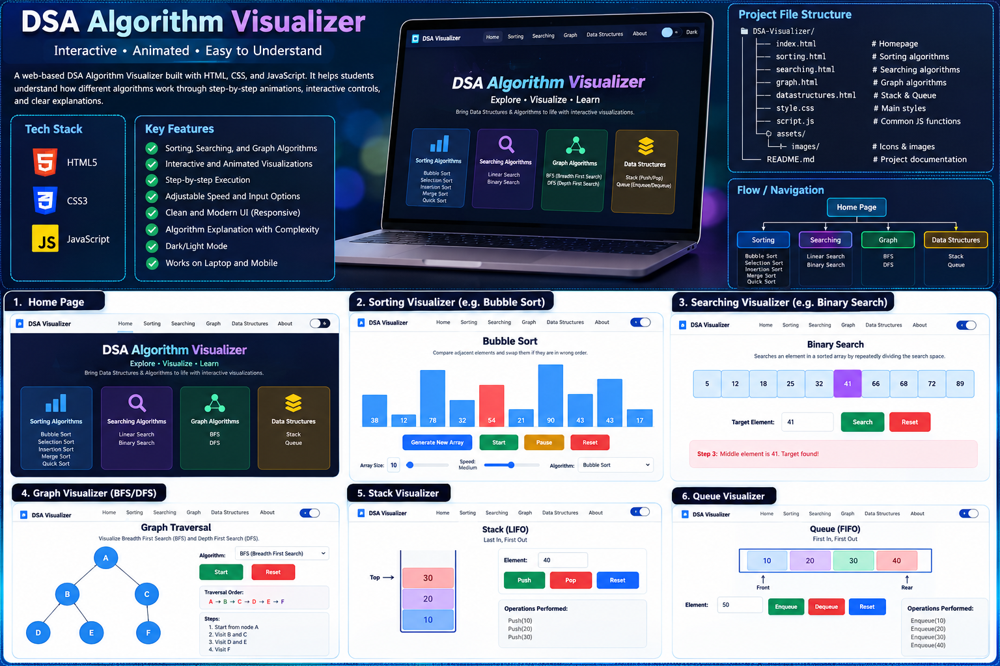

INTERACTIVE COMPUTER SCIENCE LAB
Make algorithms
come alive.
A futuristic, browser-based DSA playground where sorting, searching, graphs, stacks and queues turn into live step-by-step animations.
11Visual Algorithms
60 FPSSmooth Motion
100%Client Side
BUBBLE SORT O(n²)
BFS O(V+E)
BINARY SEARCH O(log n)
visualizer.js
LIVE
01 const array = [38, 12, 78, 23, 61]
02 for (let i = 0; i < n; i++) {
03 compare(array[j], array[j+1]);
04 swap();
05 }
01 / ALGORITHM DECK
Pick a concept. Watch it think.
Each module uses JavaScript to execute the real algorithm while the interface animates every important state change.
02 / VISUALIZER LAB
Live algorithm room
MODESORTING
SpeedFast
LIVE LOGStep 0
Ready — choose an algorithm and press Start.
COMPLEXITYO(n²)
BestO(n)
AverageO(n²)
WorstO(n²)
SpaceO(1)
03 / LEARNING LOOP
From code to Intuition.
01
Select
Choose an algorithm, generate input, and set the playback speed.
02
Visualize
Watch real comparisons, decisions, swaps, visits and structural changes animate live.
03
Understand
Read the live log and complexity panel to connect motion with Big-O reasoning.
04 / PROJECT BLUEPRINT
The visual direction.
This design board is included with the project.

05 / ABOUT THE BUILD
Algorithms Brought to life.
This project is made by VINAYAK KUMAR MISHRA Roll No: 11252598.
HTML5Semantic layout
CSS3Responsive motion UI
JavaScriptAlgorithms + animation engine